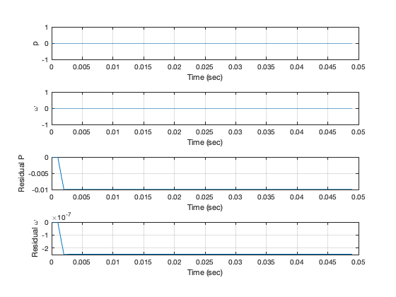

Script to simulate a detection filter
Simulates detecting failures of an air turbine. An air turbine has a constant pressure air source that sends air through a duct that drives the turbine blades. The turbine is attached to a load.
The air turbine model is linear. Failures are modeled by multiplying the regulator input and tachometer output by a constant. A constant of 0 is a total failure and 1 is perfect operation.
Contents
See also:
DetectionFilter, RungeKutta, RHSAirTurbine, PlotSet
uF = 0; tachF = 1; % Time constants for failure detection tau1 = 0.3; % sec tau2 = 0.3; % sec % End time tEnd = 0.05; % sec % State space system d = RHSAirTurbine;
Initialization
dT = 0.001; % sec n = ceil(tEnd/dT); % Initial state x = [0;0];
Detection Filter design
dF = DetectionFilter('initialize',d,[tau1;tau2],dT);
Run the simulation
% Control. This is the regulator input. u = 100; % Plotting array xP = zeros(4,n); t = (0:n-1)*dT; for k = 1:n % Measurement vector including measurement failure y = [x(1);tachF*x(2)]; % Sensor failure xP(:,k) = [x;dF.r]; % Update the detection filter dF = DetectionFilter('update',u,y,dF); % Integrate one step d.u = uF*u; % Actuator failure x = RungeKutta( @RHSAirTurbine, t(k), x, dT, d ); end
Plot the states and residuals
[t,tL] = TimeLabel(t);
yL = {'p' '\omega' 'Residual P' 'Residual \omega' };
tTL = 'Detection Filter Simulation';
PlotSet( t, xP,'x label',tL,'y label',yL,'figure title',tTL)
ans =
Figure (1: Detection Filter Simulation) with properties:
Number: 1
Name: 'Detection Filter Simulation'
Color: [0.94 0.94 0.94]
Position: [560 528 560 420]
Units: 'pixels'
Use GET to show all properties
 Copyright
Copyright (c) 2019, 2022 Princeton Satellite Systems, Inc. All rights reserved.